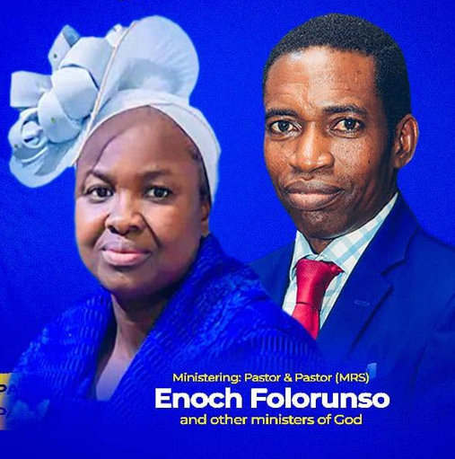

Sunday
Worship Service
A time of worship and the Word together.
8:30 am
A church raised to raise destinies through prophetic prayer and the true Word of God. Come worship, pray and grow with us.

Whether you are joining for worship, studying the Word or seeking prayer, there is a place for you here.
A time of worship and the Word together.
8:30 am
Bible study and growth in God's Word.
5:30–7:00 pm
A time set apart for prophetic prayer.
8:00–10:00 am
We gather around the true Word of God, worship and prayer. There is room to encounter God, find community and take the next step in your walk of faith.
See life at The Lord CityFaces from the life and ministry of The Lord City Gospel Grace Church.

A space to share personal accounts of faith, answered prayer and changed lives.
Approved testimonies for this month will be shared here.
Stay connected with recent teachings and moments of worship.
Join us this Sunday at 8:30 am. Find us near Meridian Bus Stop in Apata, Ibadan.
Get directions